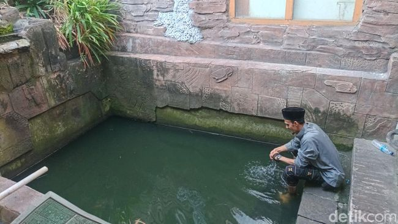
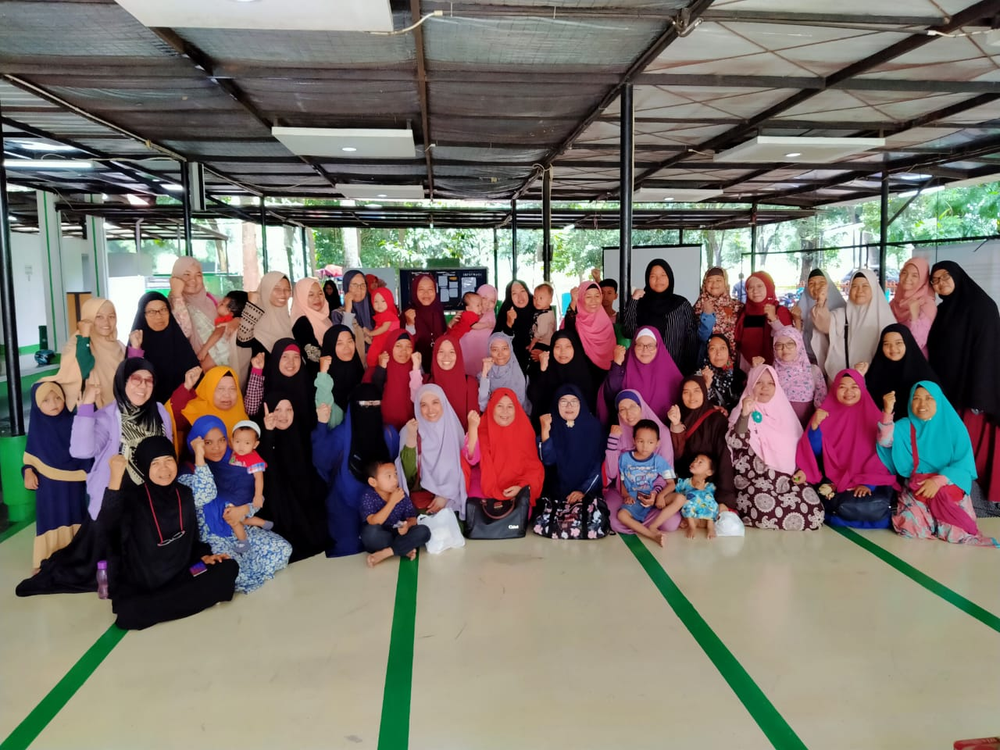
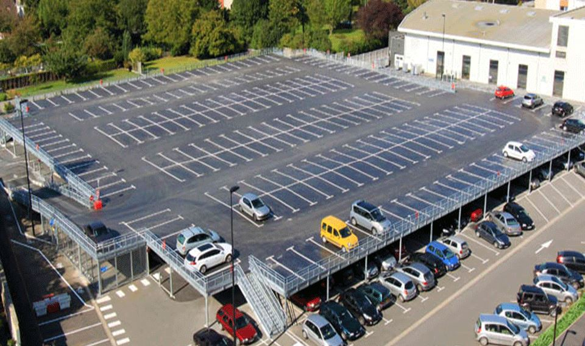
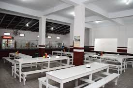

Fasilitas Masjid
Fasilitas lengkap untuk mendukung kegiatan ibadah dan pembelajaran

Ruang Sholat Utama
Ruang sholat berkapasitas 800 jamaah dengan sistem audio yang jernih dan AC yang nyaman

Perpustakaan Islam
Koleksi lengkap buku-buku Islam, Al-Quran, dan literatur keagamaan untuk pembelajaran

Tempat Wudhu
Fasilitas wudhu yang bersih dan nyaman dengan air yang selalu mengalir

Aula Serbaguna
Ruang multifungsi untuk kajian, seminar, dan acara-acara keagamaan lainnya

Area Parkir Luas
Tempat parkir yang aman dan luas untuk kendaraan jamaah

Kantin Halal
Kantin dengan makanan dan minuman halal untuk jamaah